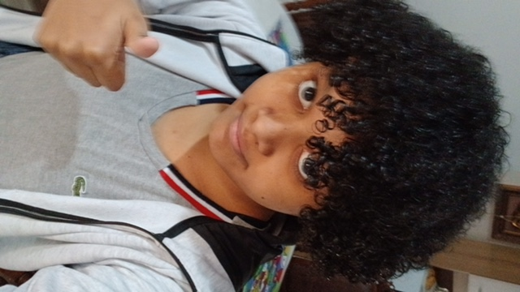

Ana Luísa Martins Bassani

"Oi! Meu nome é Ana eu sou estudante de 1⁰ Informática e tenho 16 anos". Eu fiz:
- O HTML do site das organelas
- Estilização do site
- A parede celular e o núcleo
- O complexo de golgi,
- O retículo endoplasmático liso e rugoso
Gabriela Conte Fagundes

"Meu nome é Gabriela e tenho 16 anos. Estudo no Instituto Federal de Bragança Paulista e faço parte da turma 1⁰ Informática
do Técnico Integrado". Contribuí com:
- A estilização do site
- Pequenas alterações finais no HTML
- A construção do ribossomos, mitocôndria e dos cloroplastos
Maria Paula Vieira Rocha

"Aoba. Meu nome social é Luca, tenho 16 anos e estudo no Instituto Federal de Bragança Paulista. Gosto de artes".Contribui com:
- Pesquisa para montagem do site
- Pintura das organelas
Foto da Equipe